Törnplan · 18.–23. Oktober 2026 · zwei Yachten à 37 ft
Sechs Tage Saronischer Golf
Von Alimos über Poros und Hydra bis Dokos, zurück über den Methana-Vulkan und
Epidauros. Zwei Nächte vor Anker, ein Aufbruch im Dunkeln, jeden Tag Wasser unter den Füßen –
und am Freitag entspannt zurück an die Basis.
131,8
Seemeilen gesamt
6
Segeltage So–Fr
2
Nächte vor Anker
34,3
längste Etappe (So)
5,2 kn
Rechenschnitt
Die Route
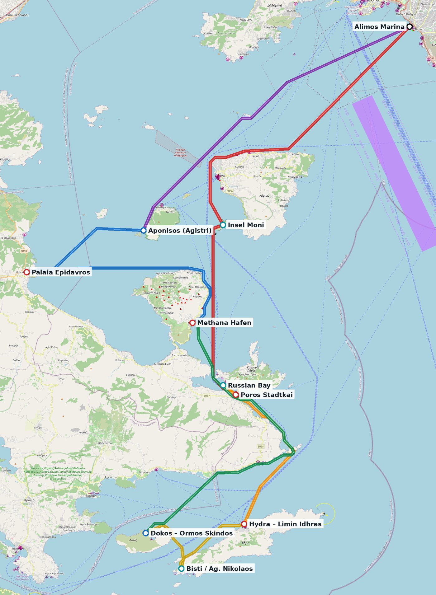
So Alimos→PorosMo →HydraDi →DokosMi →MethanaDo →AgistriFr →AlimosHafenAnkernachtBadestopp
Distanzen aus den geplanten Tracks gerechnet (nicht Luftlinie), Zeiten mit 5,2 kn Schnitt
inklusive der geplanten Pausen. Jede Ankunft liegt mindestens drei Stunden vor Sonnenuntergang.
Tag für Tag
Logbuch-Ansicht
Tag 1
Sonntag, 18.10. · Alimos → Poros
34,3 smSA 07:36SU 18:43
Ablegen mit dem ersten Tageslicht, Frühstück unterwegs, Sonnenaufgang querab der
Athener Küste. Der längste Schlag der Woche liegt bewusst am ersten Tag, solange alle frisch sind –
und er endet am belebtesten Kai des Reviers.
07:00Alimos, Leinen losHell genug zum Ablegen, Fährverkehr Piräus noch ruhig. Verkehrstrennung rechtwinklig queren.
07:36Sonnenaufgang auf SeeFrühstück in der Plicht, Ägina voraus.
11:08Insel Moni – Badestopp21,5 sm. Unbewohntes Naturschutzgebiet mit Pfauen und Rehen, Schutz aus N und O, Sand.
12:23Weiter nach SüdenVorbei an der Methana-Halbinsel, 12,8 sm bis Poros.
14:50Poros, StadtkaiHeck zum Kai mit eigenem Anker. Strömung im Sund 1,5–2 kn, Fährwellen – großzügig abfendern.
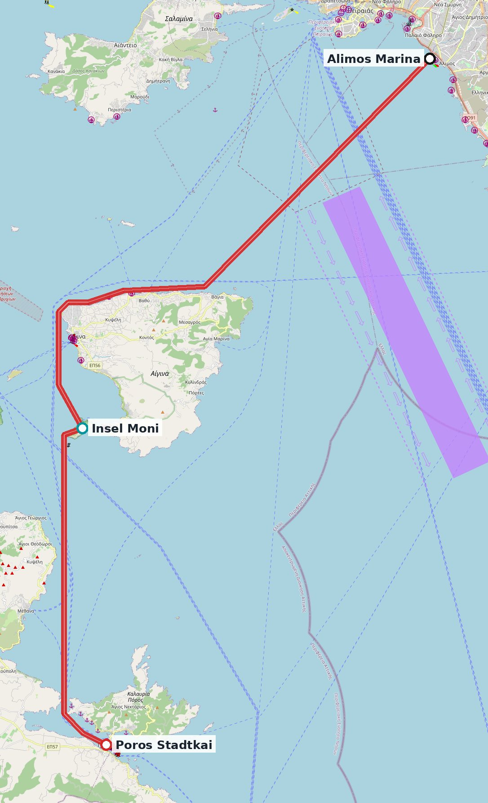
An Land
Promenade und Uhrturm, Spaziergang zum Kathedralenplatz – oben ist es schlagartig ruhig.
Abendessen in der Poseidon Taverna oder der Taverna Agrapidos abseits der Promenade.
Proviant: mehrere Supermärkte, Metzger und Bäckerei im Ort, Diesel per Minitanker auf Kanal 77.
Plan B Ägina-Stadt oder Perdika statt Poros, wenn der Wind aus Süd zu
kräftig steht; Notausgang Agistri/Skala.
Tag 2
Montag, 19.10. · Poros → Hydra
14,1 smSA 07:37SU 18:41
Kurzer Tag mit zwei sehr unterschiedlichen Hälften: vormittags eine verfallene russische
Marinebasis zum Schnorcheln, nachmittags die autofreie Kapitänsinsel. Früh genug da, um in Ruhe
einen Platz am Kai zu bekommen.
08:30Ablegen Poros1,1 sm nach Westen in die Russian Bay.
08:42Russian Bay – Ankern & LandgangSchwojen bei 4–6 m vor der Insel Dhaskalia oder 8–12 m tief in der Bucht. Ruinen der Marinebasis
des Zaren im NE, mit dem Dinghy erreichbar. Schutz NW–NE, Fährschwell beruhigt sich abends.
11:13Anker aufAus dem Sund nach Osten, dann um Ak Skillaion nach SSW – 13,0 sm.
13:42Hydra, Limin IdhrasStadtkai auf der S-Seite oder Innenseite der N-Mole; dort liegen Ballaststeine – vorsichtig
Heck zum Kai. N–NW drückt in den Hafen, Ankerhalt prüfen.
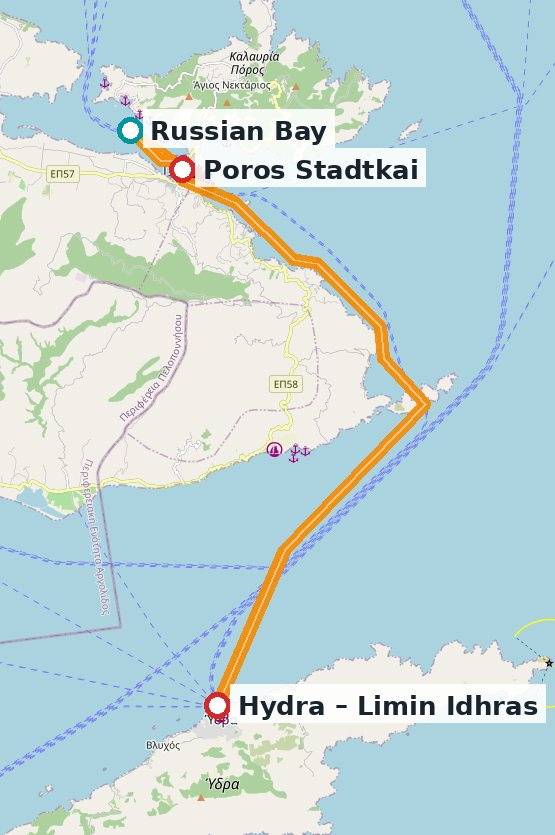
An Land
Gassen und Kapitänshäuser; keine Autos, nur Esel und Wassertaxis.
Spaziergang Kamini–Vlychos, rund 1,5 Stunden hin und zurück, Taverne direkt am Wasser.
Sundowner: Hydronetta auf den Felsen (mit Badeleiter) oder Windmill mit Blick
über den Golf; für Essen mit Aussicht Sunset Hydra – Tisch vorher reservieren.
Plan B Hafen voll oder zu viel Schwell: davor ankern und mit dem Dinghy
reinfahren, oder 1 sm östlich nach Mandraki – Sand, 15–20 m, guter Halt, offen nur nach NW.
Ganz schlechtes Wetter: Ermioni.
Tag 3
Dienstag, 20.10. · Hydra → Dokos
10,6 smSA 07:38SU 18:40
Der faulste Tag der Woche: zehn Meilen, eine lange Badepause und am Nachmittag eine
unbewohnte Insel für uns allein. Abends wird die Einfahrt als Track gesichert – morgen früh geht es
im Dunkeln wieder hinaus.
08:30Ablegen HydraAn der Südküste entlang nach Westen, 5,7 sm.
09:35Bisti / Agios Nikolaos – BadenKiefern bis ans Wasser, kristallklar, Schnorcheln. Kein Rundumschutz – nur bei stabiler Lage.
12:06Kurz nach Dokos4,9 sm quer über den Sund.
13:02Ormos Skindos – Ankernacht 1Sand, 5–12 m, guter Schutz vor NE und SE. Untiefe an der NE-Seite der Bucht liegt 3,5 m tief.
Alte Muringkette in Derrick Cove beachten.
17:00Klar für morgen frühEinfahrts-Track und Peilungen sichern, Ankerlicht setzen, Motor und Navlichter prüfen,
Nachbarboote notieren. Ankerwache in Zweierschichten.
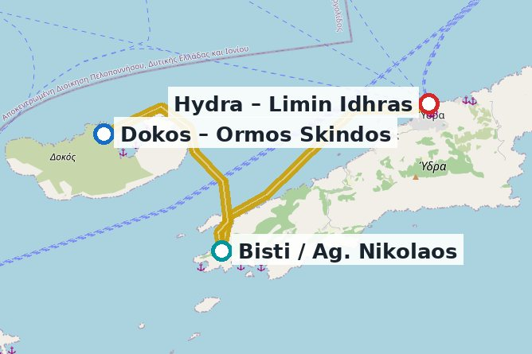
An Land
18 Einwohner, meist Mönche und Schäfer – karg, still, kein Strom, keine Taverne.
Grillen am Strand, Müll kommt wieder mit an Bord.
Vor Dokos liegt das älteste bekannte Schiffswrack der Welt (2700–2200 v. Chr.) –
Tauchen nur mit Genehmigung, die Funde stehen im Museum von Spetses.
Ankerwache Vor Anker gilt die Ausguckpflicht weiter. Zwei-Stunden-Schichten,
Ankerlicht rundum sichtbar, GPS-Alarm nur als Ergänzung. Kettenlänge 5:1 bis 7:1 je nach Schwojraum.
Tag 4
Mittwoch, 21.10. · Dokos → Methana
24,3 smab 05:00 · dunkelSU 18:39
Der eine geplante Nachtstart. Raus geht es unter Motor auf dem eigenen Track vom Vortag,
dann nordostwärts um Ak Skillaion, durch den Poros-Sund und weiter zur Vulkanhalbinsel. Ankunft zum
zweiten Frühstück, der ganze Rest des Tages gehört dem Krater.
05:00Anker auf, DokosUnter Motor auf dem gespeicherten Track hinaus, Taschenlampe für die Nachbarboote,
Segel erst auf freiem Wasser.
07:39SonnenaufgangEtwa auf Höhe Ak Skillaion – Kaffee und Frühstück unterwegs.
09:39Methana, neuer Hafen24,3 sm. Rund 40 Plätze am langen Pier, Heck zum Kai, Strom am Pier. Vorreservierung empfohlen.
Schwefelgeruch ist normal – das ist der Vulkan, nicht das Boot.
10:30Taxi nach Kameni ChoraRund 7 km. Dorf auf erkalteter Lava, heute noch etwa 15 Einwohner.
11:15Auf den historischen VulkanVom Parkplatz 10–15 min auf die Hochebene des Lavadoms, weitere 25 min ins Zentrum.
Feste Schuhe, Wasser, nicht klettern – das Gestein rollt.
14:00Zurück an BordThermalquellen am Meer, danach Hafenrunde: Restaurants, Bars, Eisdielen und die verfallene
Belle-Époque-Kurstadt.
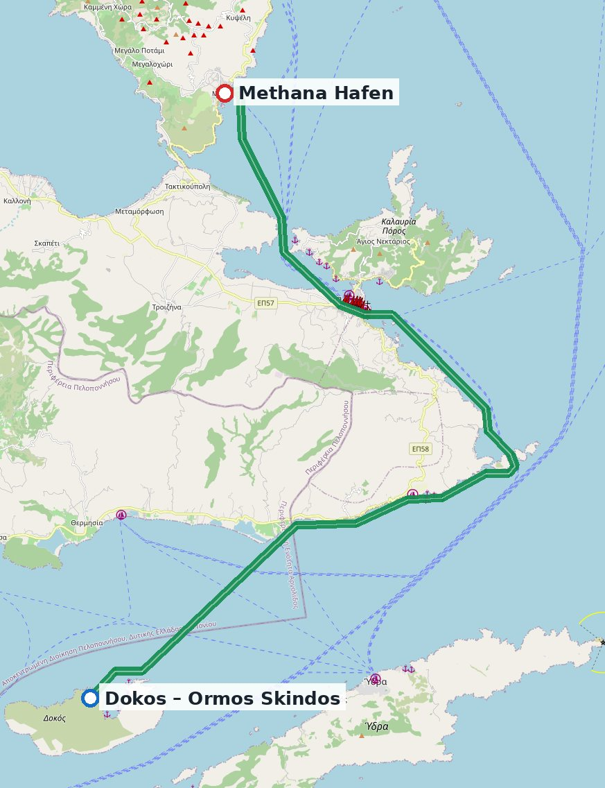
Vorher klären
Deckt die Charterversicherung das Auslaufen vor Sonnenaufgang? Bei der Übergabe ansprechen.
Liegeplatz Methana für Mittwochvormittag vorreservieren.
Zwei Taxis für sechs Mann – am Vorabend im Hafen bestellen; das letzte Stück ist unbefestigt.
Plan B Kein Taxi oder zu wenig Zeit: Kameni Chora streichen und stattdessen
nachmittags schon 16 sm weiter nach Epidauros – dann ist der Donnerstag halb so lang.
Zu viel Welle im Sund: Vathi auf der Ostseite der Halbinsel.
Zwei Etappen mit dem Weltkulturerbe dazwischen. Wir sind vor den Reisebussen im Theater
und liegen am Abend wieder einsam vor Anker – Kiefernwald bis ans Wasser statt Hafenkai.
07:00Ablegen MethanaNördlich um die Halbinsel herum, dann westwärts in den Golf von Epidauros – 16,2 sm.
10:06Palaia EpidavrosKleiner Hafen; bei Vollbelegung davor ankern, maximal 20 m Kette stecken und
nicht auf den Ruinen ankern.
10:30Taxi zum Theater von Epidauros15 km landeinwärts. Stätte geöffnet 08:00–18:00, Eintritt 20 € (ermäßigt 10 €),
Taxi rund 45 € für vier Personen.
13:45Leinen los9,1 sm quer nach Osten zur Insel Agistri.
15:06Aponisos – Ankernacht 2Geschützte Bucht an der SW-Seite von Agistri, Kiefernwald bis ans Wasser, flache Felsen
und Kies, Taverne an Land. Zweite Ankerwache der Woche.
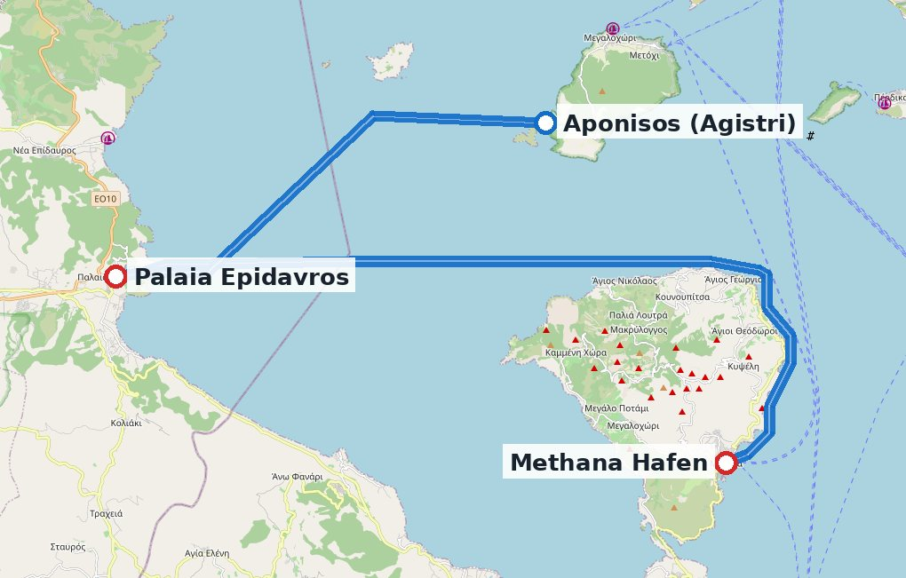
An Land
Das große Theater fasst 14.000 Zuschauer und ist für seine Akustik berühmt – ein Streichholz
auf der Orchestra ist in der obersten Reihe zu hören. Ausprobieren.
Am Hafen von Epidavros: kleines antikes Theater direkt am Ort und die versunkene Stadt
im Flachwasser – Schnorchelbrille mitnehmen.
Aponisos: Essen an Bord oder in der Strandtaverne; Dragonera mit Beach Bar liegt zwei Meilen
weiter nördlich.
Plan B Schwell oder zu viel Betrieb in Aponisos: Metopi
(100 % Schutz bei starkem Nordwind, gutes Schnorchelrevier) oder Hafen Skala auf Agistri.
Wer die letzte Nacht näher an Athen will: Peristeria oder Kanakia auf Salamis –
dann ist der Freitag nur 13 sm lang. Vorsicht bei Kakia Vigla: Schwell durch Frachter nach Piräus.
Tag 6
Freitag, 23.10. · Aponisos → Alimos
23,3 smSA 07:41SU 18:36
Nördlich an Ägina vorbei zurück in die Bucht von Athen. Kurz genug, dass Tanken,
Aufklaren und Übergabe nicht in Hektik enden – und lang genug für einen letzten Schlag unter Segeln.
07:15Anker auf, AponisosNordwärts zwischen Agistri und Ägina hindurch.
09:00Ägina querabOptionaler letzter Badestopp in der Klima-Bucht, wenn die Zeit gut steht.
11:43Alimos Marina23,3 sm. Anmeldung auf VHF-Kanal 71, tanken, Boote aufklaren.
15:00ÜbergabeReichlich Puffer für Check-out, Duschen und ein letztes Bier an der Marina.
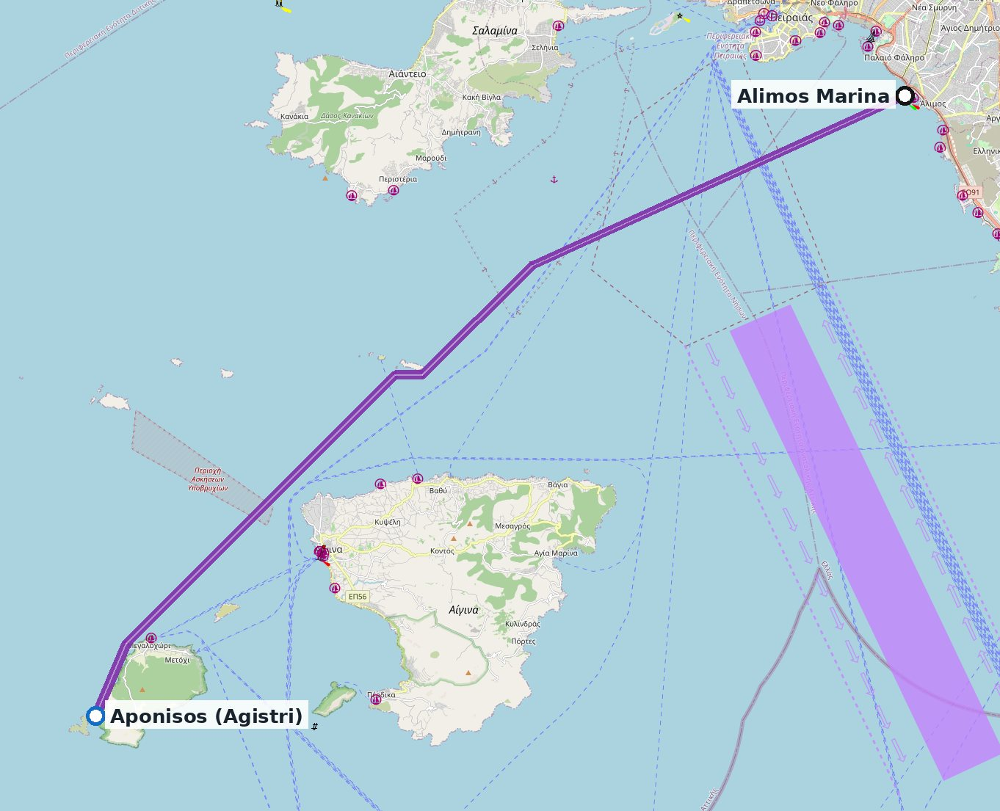
Auf dem letzten Stück
Vor Piräus kreuzen wir die Großschifffahrt: rechtwinklig, zügig, nicht im Fahrwasser trödeln.
Schnellfähren laufen 30+ kn – AIS nutzen und früh Platz machen statt auf Vorfahrt zu bestehen.
Diesel in Alimos vor der Rückgabe, Belege aufheben.
Plan B Bei auffrischendem Nordwind früher los und die Klima-Bucht streichen.
Notausgänge auf dem Weg: Ägina-Stadt und Marina Agios Kosmas.
Häfen, Buchten & Ansteuerung
Hafenpläne aus dem Revierführer · Wegpunkte aus dem Hafenkapitel
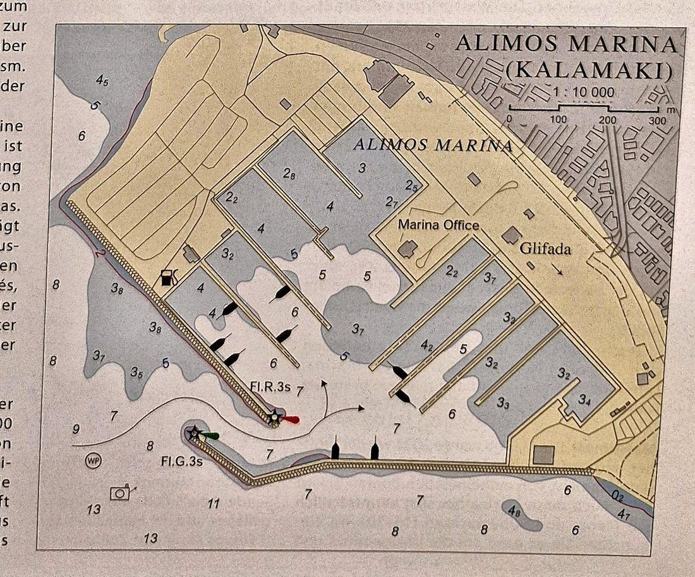
183 · Alimos Marina (Kalamaki)
Alimos Marina
WP 37°54,6′N 23°41,9′E
Anlegen
Größte Marina Griechenlands, ~1.100 Liegeplätze, Anmeldung VHF Kanal 71.
Versorgung
Landstrom 16–32 A, Wasser, Diesel, WLAN, 24-h-Bewachung.
Achtung
Beim Auslaufen quert man den Verkehr von und nach Piräus – rechtwinklig und zügig.
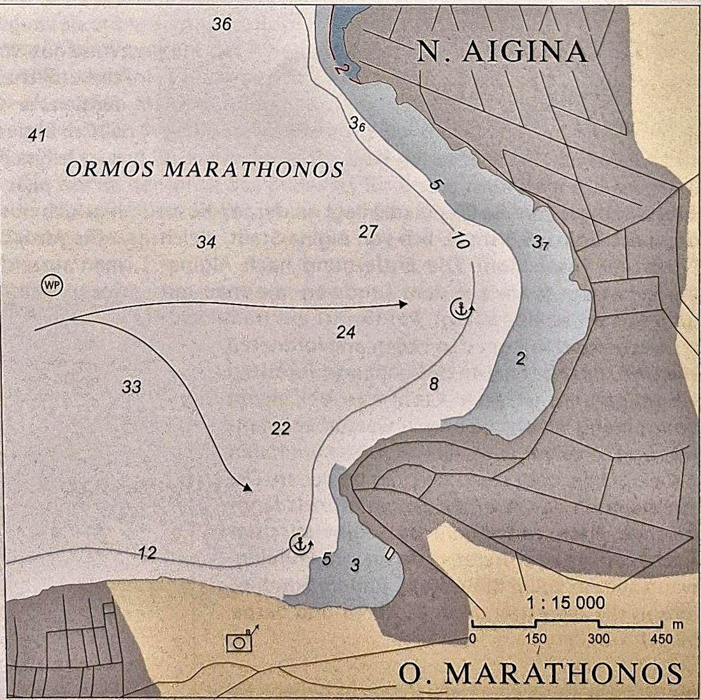
198 · Ägina – Marathonos, Klima, N. Moni
Insel Moni
WP 37°42,0′N 23°27,5′E
Ankern
Drei Plätze (zwei im N, einer im S), Sand, guter Halt, Schutz aus N und O.
Charakter
Unbewohntes Naturschutzgebiet, freilaufende Pfauen und Rehe, Wanderung zum Gipfel.
Alternative
Klima-Bucht an der Südküste Ägina – hufeisenförmig, ruhig, anfängerfreundlich.
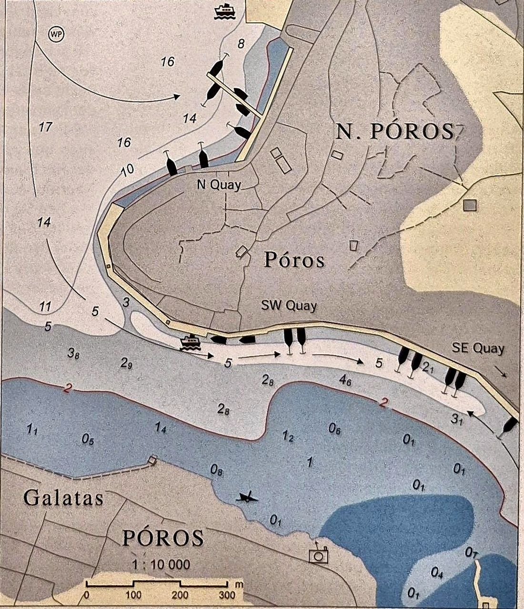
203 · Poros
Poros Stadtkai
WP 37°30,2′N 23°27,0′E
Anlegen
NW-Pontoon (im Herbst längsseits), NW-Quay, S- und SE-Quay mit eigenem Anker
Heck zum Kai. Die Plätze ganz im SE sind für Charterboote reserviert.
Tiefen
2,5–3,5 m am Kai, am nördlichen Pontoon deutlich mehr.
Versorgung
Wasser und Strom am Kai, am Schwimmsteg nur Wasser. Diesel per Minitanker, Kanal 77.
Achtung
Strömung im Sund 1,5–2 kn, kräftige Fährwellen, bei starkem S Böen vom Peloponnes.
Der südliche Kanal Richtung Galatas ist nur 3,5–4 m tief.
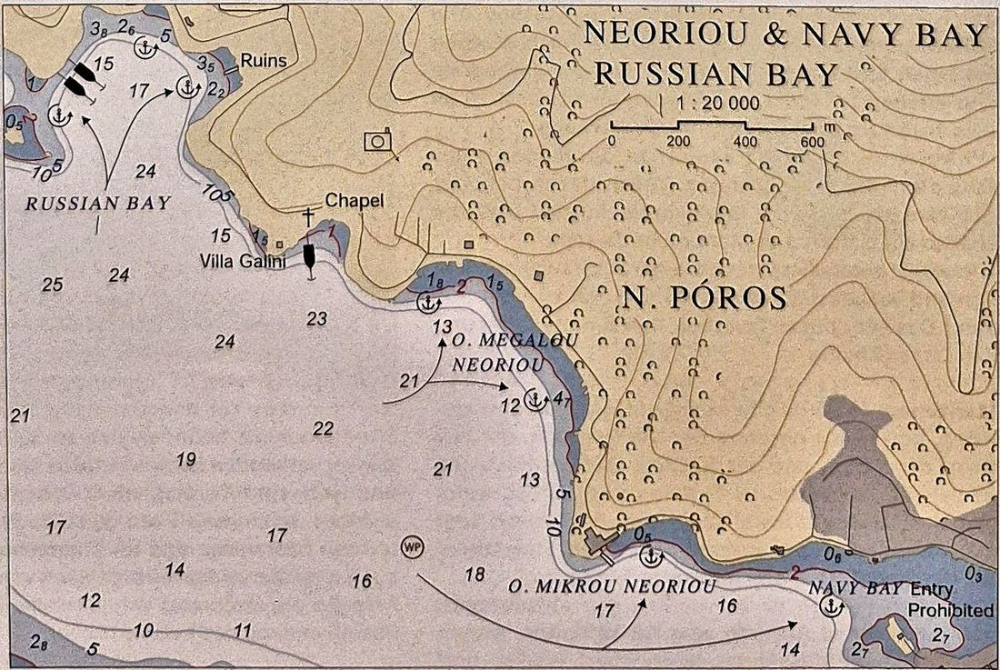
202 · Poros – Russian Bay, Neorion, Navy Bay
Russian Bay
WP 37°30,5′N 23°26,4′E
Ankern
4–6 m vor der Insel Dhaskalia oder 8–12 m tief in der Bucht; Sand, guter Halt.
Schutz
Gut aus NW bis NE; Fährschwell tagsüber, abends ruhig.
Land
Reste der russischen Marinebasis des 19. Jh. im NE der Bucht, heute Kulturdenkmal.
Nebenan Chapel Cove mit Leine an Land (5–8 m) und die Villa Galini, in der Henry Miller schrieb.
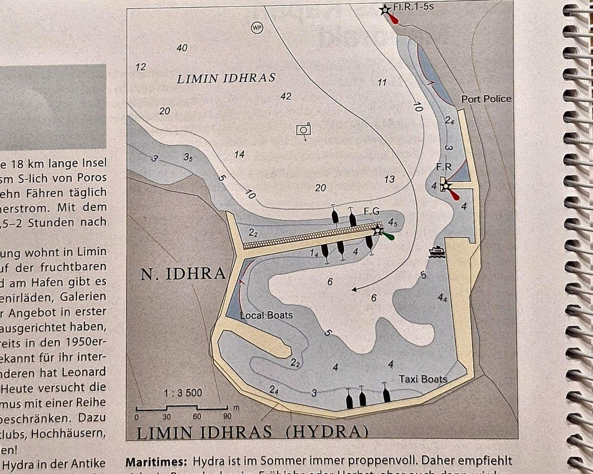
207 · Hydra – Limin Idhras
Hydra
WP 37°21,2′N 23°27,9′E
Anlegen
Stadtkai auf der S-Seite oder Innenseite der N-Mole. Dort liegen Ballaststeine –
vorsichtig mit eigenem Anker, Heck zum Kai. Große Boote außen an der Mole mit langer Landleine.
Schutz
Gut, aber N–NW drückt hinein; Ankerhalt kontrollieren. Fähren und Ausflugsboote machen Schwell.
Ansteuerung
Einfach – der Hafen wird aber erst sichtbar, wenn man auf der Nordseite der Insel ist.
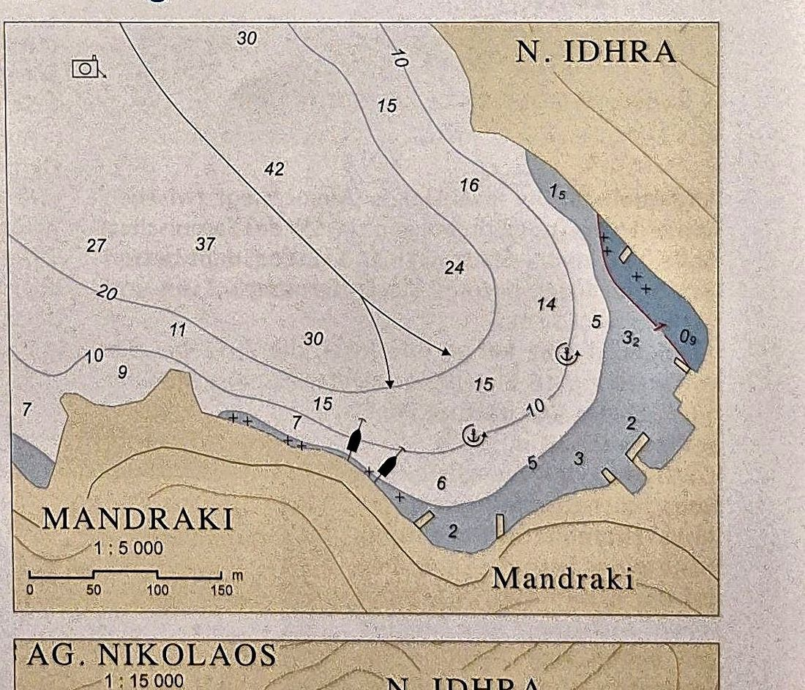
208a · Hydra – Mandraki
Mandraki Plan B
WP 37°21,4′N 23°28,9′E
Ankern
Vor den Badebojen bei 15–20 m, Sand und Schlamm, guter Halt.
Schutz
Offen nach NW, sonst gut aus den meisten Richtungen; die Insel Kivotos schirmt zusätzlich ab.
Land
Einziger Sandstrand der Insel, Restaurant, Strandbar, Wassertaxi nach Hydra-Stadt,
zu Fuß etwa 20 Minuten.
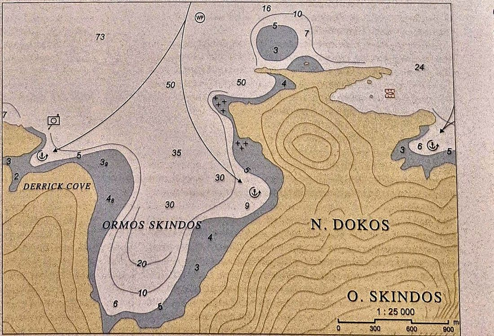
209 · Dokos – Ormos Skindos, Derrick Cove
Dokos – Ormos Skindos
WP 37°21,2′N 23°20,4′E
Ankern
5–12 m, Sand, guter Halt. Bei Westwind auf die Ostseite der Insel wechseln.
In Derrick Cove 7–10 m, ggf. Leine an Land – auf die alte Muringkette achten.
Schutz
Gut gegen die üblichen NE- und SE-Winde; bei starkem Nordwind Fallböen von den Hügeln.
Ansteuerung
Von Norden einfach. Die Untiefe an der NE-Seite der Bucht liegt 3,5 m unter der
Oberfläche und ist bei Starkwind zu meiden.
Distanzen
Hydra-Stadt 6,5 sm, Ermioni 5 sm.
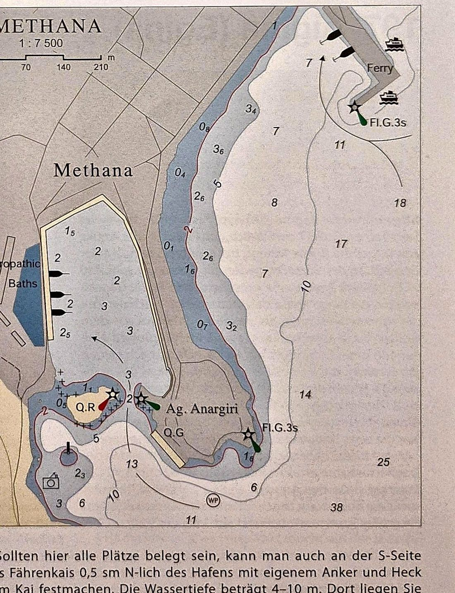
196 · Methana
Methana
WP 37°34,5′N 23°23,4′E
Anlegen
Rund 40 Plätze am langen Pier, Heck zum Kai. Strom am neuen Pier, nicht in der
alten Marina. Vorreservierung empfohlen.
Land
Thermalquellen direkt am Meer, verfallene Kurstadt der Belle Époque, Supermärkte,
Restaurants, Bars. Kameni Chora und der historische Krater per Taxi.
Achtung
Schwefelgeruch ist vulkanisch bedingt und völlig normal.
Alternative
Vathi auf der Ostseite der Halbinsel (WP 37°35,5′N 23°20,2′E) – kleiner und ruhiger.
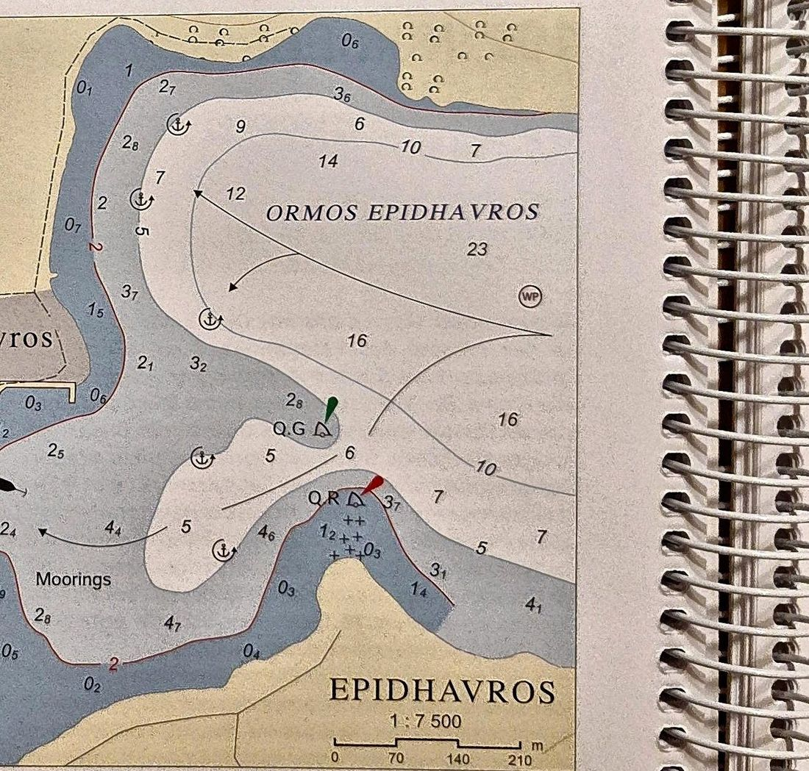
193 · Epidhavros (Epidaurus)
Palaia Epidavros
WP 37°38,4′N 23°09,8′E
Anlegen
Kleiner, romantischer Hafen zwischen zwei Landzungen; bei Vollbelegung davor ankern.
Ankern
Maximal 20 m Kette stecken – und keinesfalls über den Ruinen ankern.
Land
Kleines antikes Theater am Ort, versunkene Stadt zum Schnorcheln, großes Theater
15 km landeinwärts per Taxi.
Alternative
Nea Epidavros – winziger Hafen an einer Flussmündung, sehr ruhig.
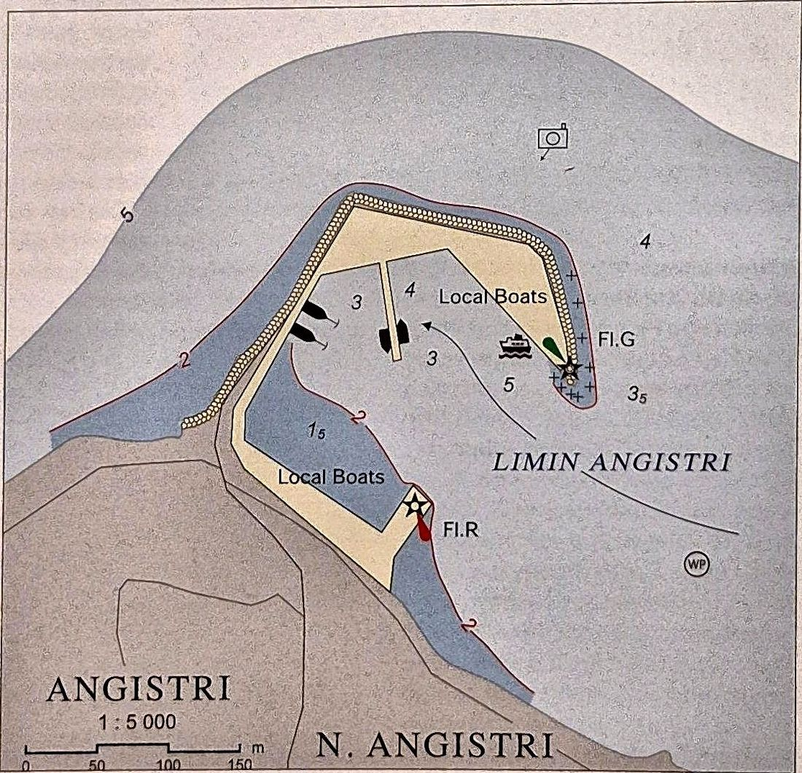
201 · Angistri (Milos), Nisis Dhoroussa
Aponisos & Agistri
Aponisos 37°41,1′N 23°19,3′E
Ankern
Geschützte Bucht im SW, Kiefernwald bis ans Wasser, flache Felsen und Kies.
Weitere Buchten auf der SE-Seite bei ruhigem Wetter.
Häfen
Megalochori (Mylos) und Skala mit Platz zum Med-Mooring, Wasser und Strom am Kai –
im Sommer ist Wasser knapp.
Achtung
Die Durchfahrt zwischen Agistri und Metopi hat nur 3 m und viele Riffe: nur bei
ruhiger See, Ausguck am Bug, genau mittig durch.
Donnerstag
Megalochori abends wegen Musik und Diskotheken meiden – wir liegen ohnehin vor Anker.
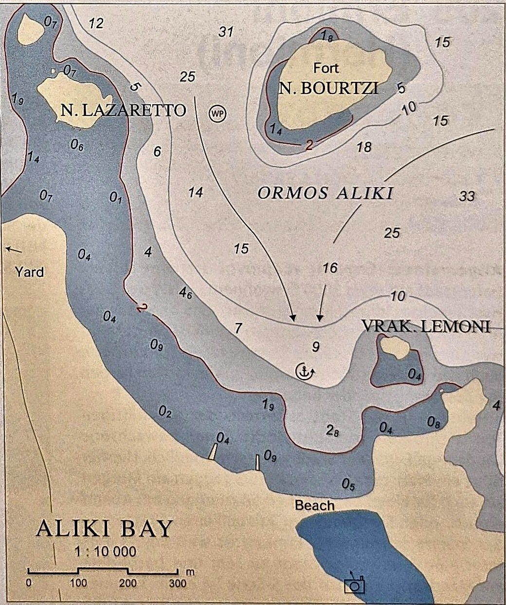
204 · Aliki Bay, O. Spathi, Akra Skillaion
Ak Skillaion Notankerplätze
WP 37°29,4′N 23°28,4′E
Lage
Auf dem Weg zwischen Poros und Hydra – mehrere Ankerplätze je nach Windrichtung.
Ankern
Bucht Spathi NW des Kaps, kleine Lagune südlich davon oder westlich der Insel Spathi
bei 4–6 m im Sand. Kristallklares Wasser, bei stabilem Wetter auch für eine Nacht tauglich.
Aliki Bay
Winden aus N und W ausgesetzt; Anker durch die dünne Grasschicht eingraben.
Grobe Etappenplanung und Nummernschlüssel zu den Hafenkapiteln des Revierführers.
Nicht dabei
Spetses, Ermioni und Porto Cheli liegen südwestlich außerhalb unserer Schleife –
gute Kandidaten für den nächsten Törn.
Sicherheit, Papiere & Tagesritual
Verkehr und Gefahren
Schnellfähren mit 30+ kn auf allen Hauptrouten – AIS nutzen, früh Platz machen.
Großschifffahrt vor Piräus rechtwinklig und zügig queren.
Fischfarmen und Netze sind nicht überall im Plotter – vor dem Ansteuern heranzoomen und schauen.
Keine Gezeiten, kaum Strömung außer im Poros-Sund (1,5–2 kn).
Untiefen gut kartiert, aber Poros-Südkanal und die Metopi-Durchfahrt ernst nehmen.
Papiere an Bord
DEKPA – Charter-/Crewzertifikat, griffbereit für den Hafenmeister.
TEPAI – griechische Kreuzfahrtabgabe, seit 2019 Pflicht.
Segelscheine, Ausweise und Charterunterlagen digital zusätzlich im Crew-Chat.
Versicherungsbedingungen zum Auslaufen vor Sonnenaufgang schriftlich bestätigen lassen.
Tagesritual
Abends: Poseidon-Wellenvorhersage und EMY gegen Windy prüfen, Modelle vergleichen.
Danach Etappe, Plan B und Notausgang festlegen und die Crew briefen.
Morgens: Wetter bestätigen, Maschinencheck, Ablegebriefing mit Rollen, Kanal 16 auf Empfang.
Vor jeder Hafeneinfahrt: Manöver briefen, Fender und Leinen klar, Tiefe im Blick.
Zwei Boote, eine Crew
Feste Bordkanal-Absprache (z. B. VHF 72) für die Kommunikation zwischen den Yachten.
Treffpunkt und Uhrzeit für jeden Badestopp vorher vereinbaren – nicht unterwegs improvisieren.
In engen Häfen läuft ein Boot zuerst ein und meldet Platz und Tiefe zurück.
Vor Anker: Schwojkreise beider Boote so legen, dass sie sich nicht überschneiden.
Vor dem Ablegen zu klären
Stand 12.09.2026
Nachtstart freigeben lassen. Bei der Übergabe in Alimos klären, ob das Auslaufen um
05:00 Uhr am Mittwoch versicherungstechnisch gedeckt ist.
Liegeplatz Methana reservieren für Mittwochvormittag – rund 40 Plätze, Vorreservierung empfohlen.
Zwei Taxis in Methana für Kameni Chora und zwei Taxis in Epidavros für das Theater
jeweils am Vorabend bestellen.
Öffnungszeiten und Preise Epidauros kurz vor der Reise gegenprüfen – Winterzeiten gelten ab 1. November.
Insel Kyra aus dem Revier-Video ließ sich weder im Revierführer noch in OSM eindeutig verorten.
Aponisos ist deshalb der geplante Ankerplatz; wer vor Ort mehr weiß, kann tauschen.
Wetterfenster Sonntag prüfen: Der 34-sm-Schlag ist die einzige Etappe ohne echten Ausweichhafen
auf halber Strecke.
Grillzeug, Landleinen und Schnorchelbrillen einpacken – zwei Ankernächte und fünf Badestopps.